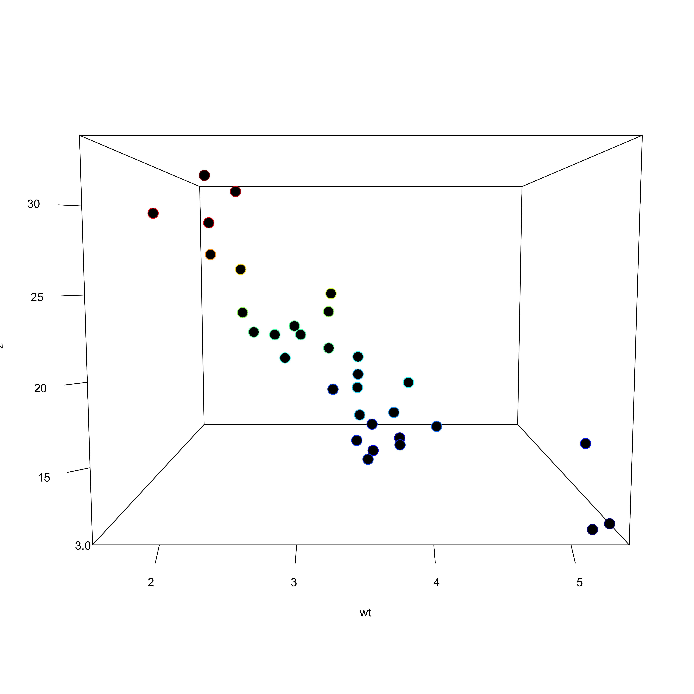
Data Science for Linguists
The linear model: Multiple regression
Joseph V. Casillas, PhD
Rutgers University
Last update: 2025-02-20
Multiple regression and correlation
MRC
Multiple Causation
- In nature: a phenomenon may have more than a single cause
- In statistics: criterion variable might have more than a single relevant predictor
- Leaving a potential cause out of the equation would constitute “omitting a relevant variable”
- This biases the parameter estimates for the other predictors
- We are not always sure of what those other predictors might be!
MRC
Overview
- We have specified a linear formula that can account for the relationship between two continuous variables.
\[Y = a + bX + e\]
- It is uncommon for a given response variable to be determined by a single predictor
- Most theories/models in social science predict complex relationships between multiple predictors.
- Score ~ SES + IQ
- Duration ~ speech rate + number of syllables
- RT ~ working memory + word position
- We can extend the linear model equation to account for multiple predictors.
MRC
Overview
- We want to construct the equivalent of an OR statement or a logical disjunction
- Boolean Algebra tells us that an OR statement implies summing things
- In other words, all X’s do not have to be high at once to have an effect on Y
- For example, you can get an overall high GRE score by scoring high in verbal but (somewhat) low in math:
- They have to have a high total (or sum)
- A sum is implicitly an OR statement
| A (x) |
B (y) |
C (x ∨ y) |
|---|---|---|
| 0 | 0 | 0 |
| 0 | 1 | 1 |
| 1 | 0 | 1 |
| 1 | 1 | 1 |
OR
B = 1,
then C = 1
Otherwise, C = 0
MRC
Overview
- What if we based linguistics Grad School
acceptances solely on GRE scores?
- One shouldn’t have to score high on all of
the entrance requirements, but just rank
high on the sum of all of them
- We could use a weighted sum
MRC
Overview
Weighted sum
- Some things are more important than others in this overall sum
- For example, GRE is actually a poor predictor of graduate student success
- So we might want to weight this variable lower than something like GPA or letters of recommendation
- We can use least squares estimation to get the b-weights with the lowest SSERROR
MRC
The equation
\[Y = a + bX + e\]
\[Y = a_{0} + b_{1}X_{1} + b_{2}X_{2} {...} b_{k}X_{k} + e\]
Least Squares Estimation
- R will estimate the b-weights that minimize the sum of the squared errors (🙅 by hand examples)
- Ideally these are the b-weights that best represent how much each predictor is really contributing to the variance in the criterion variable (y)
- We will again use least squares estimation to achieve the best (optimal) regression weights
MRC
Multiple predictors
- The multiple predictors represent different hypotheses regarding what might be affecting the criterion variable
- In other words, multiple regression is just creating a sum of weighted predictors to explain the total variance in the criterion variable
- The way that the predictors function together is not necessarily the same as the way that they each function alone
- Bivariate regression is just a degenerate form (“special case”) of multiple regression containing only one predictor
MRC
Interpretation
Summarizing so far…
- In multiple regression we assume additivity and linearity
- In Boolean Algebra, a sum (addition) represents a logical disjunction
- The multiple regression “weighted sum” is a complex OR statement
What does this mean for our parameter estimates and how do we interpret them?
MRC
(Semi)partial betas
- Intercept ( \(a_{0}\) ): the value of the criterion variable when all predictors are equal to 0 (same as bivariate regression)
- Slope ( \(b_{k}\) ): the change in the criterion associated with a 1-unit change in \(X_k\)… with all other predictors held constant
How can we calculate the unique contribution of each predictor?
MRC
MRC
Recall that the b-weight
of the bivariate model is \(r(\frac{s_y}{s_x})\)
MRC
MRC
The “Ballantine”
Cohen & Cohen (1975)
MRC
- \(r^{2}_{x1,x2} = c + d\)
- \(r^{2}_{y,x1} = a + c\)
- \(r^{2}_{y,x2} = b + c\)
- \(R^{2}_{y,x1,x2} = a + b + c\)
MRC
Squared semipartial correlation
- \(X_2\) removed from explained
variance - Represents unique contribution
of \(X_1\) - \(sr^2 = R^{2}_{y,x1,x2} - r^{2}_{y,x2}\)
MRC
Squared partial
correlation
- Y variance not accounted for by
\(X_2\) is the area of A + E - The area explained by \(X_1\) = A
(squared semipartial correlation) - Unqiue contribution of \(X_1\) is
\(A / (A + E)\) or… - \(pr^{2}_{x1} = \frac{A}{A + E}\)
- We are pretending that \(X_2\)
doesn’t exist (statistically)
MRC
Statistical control1
- Not the same as experimental control
- We are interested in some treatment
- Some participants receive treatment, some do not
- Only looking at highly proficient bilinguals (not low, med. prof.)
- We partial out the effects of predictor \(X_1\) from all other predictors and use this error to determine \(b_1\)
- We are estimating the effect of one predictor while holding the other predictors constant
- This will only work if predictors are not correlated (i.e., there cannot be multicollinearity)
MRC
Conceptual understanding
- MRC is much more difficult to conceptualize than the bivariate linear regression
- If we consider a simple three variable model (y ~ x1 + x2) we are fitting a hyperplane to a three dimensional space
- More variables = more complexity
MRC
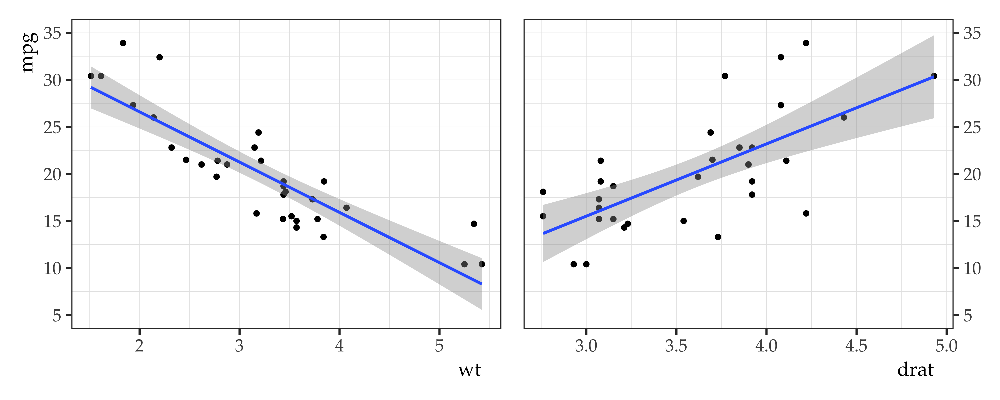!=
MRC
MRC
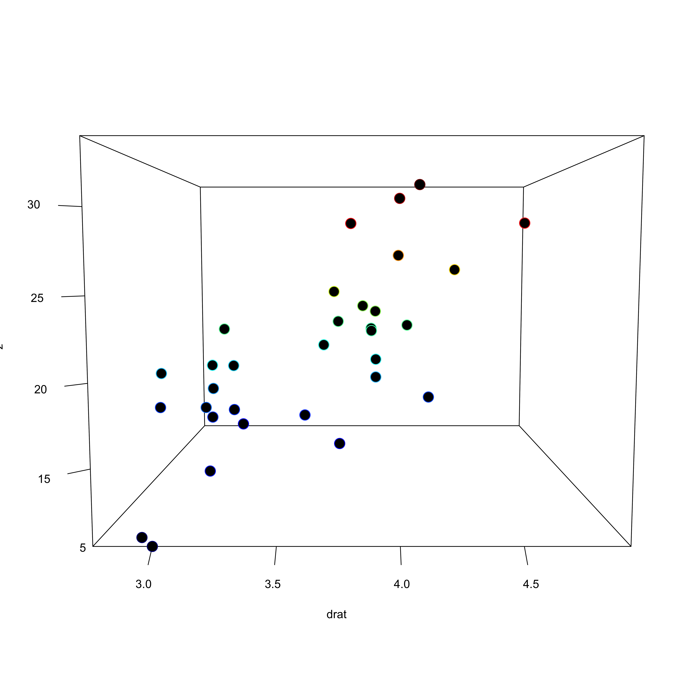
MRC
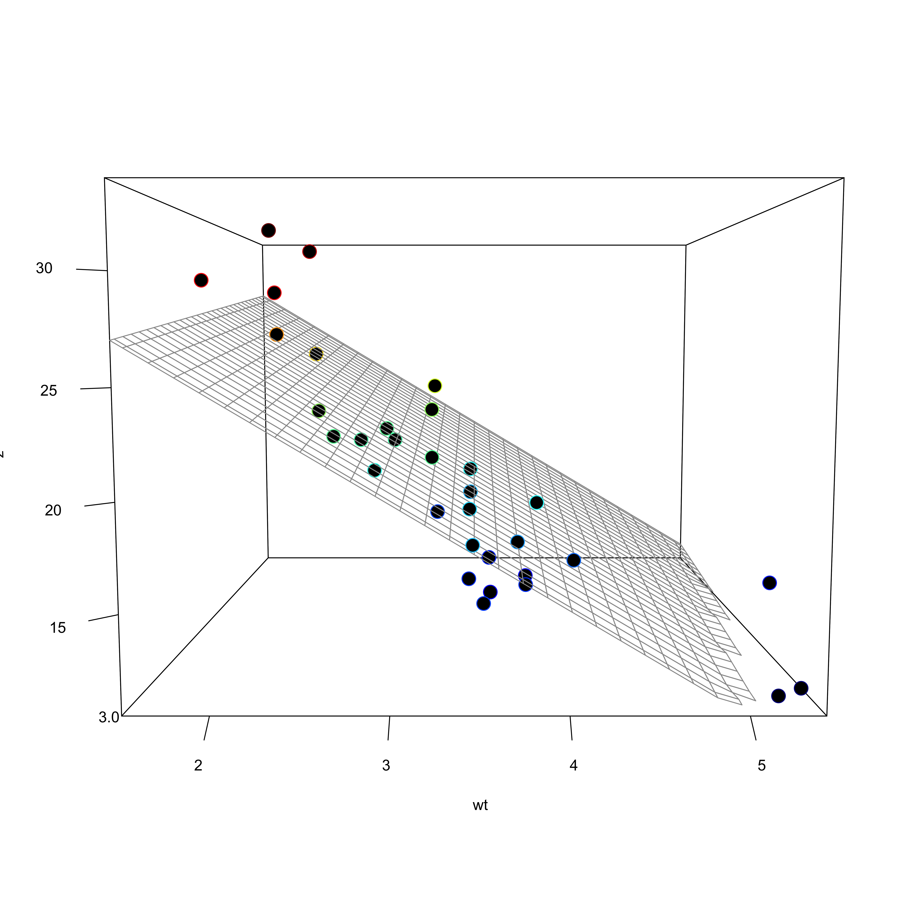
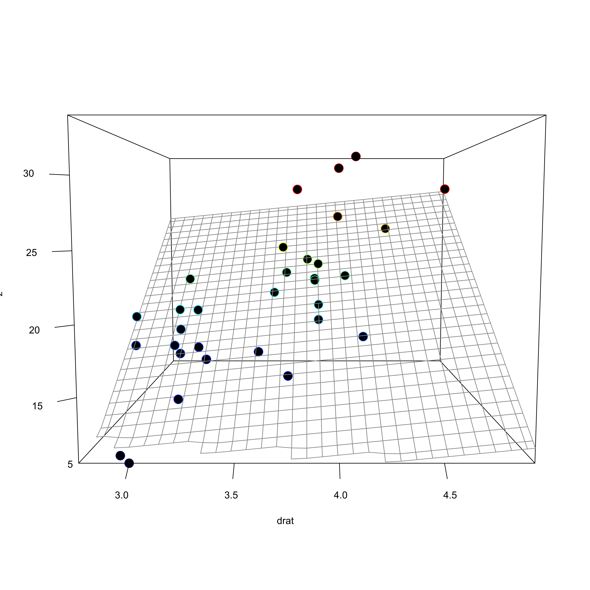
MRC
MRC
Doing it in R
Call:
lm(formula = mpg ~ wt + drat, data = mtcars)
Residuals:
Min 1Q Median 3Q Max
-5.4159 -2.0452 0.0136 1.7704 6.7466
Coefficients:
Estimate Std. Error t value Pr(>|t|)
(Intercept) 30.290 7.318 4.139 0.000274 ***
wt -4.783 0.797 -6.001 1.59e-06 ***
drat 1.442 1.459 0.989 0.330854
---
Signif. codes: 0 '***' 0.001 '**' 0.01 '*' 0.05 '.' 0.1 ' ' 1
Residual standard error: 3.047 on 29 degrees of freedom
Multiple R-squared: 0.7609, Adjusted R-squared: 0.7444
F-statistic: 46.14 on 2 and 29 DF, p-value: 9.761e-10MRC
CIs and significance tests
| beta | SE | 95% LB | 95% UB | t-ratio | p.value | |
|---|---|---|---|---|---|---|
| (Intercept) | 30.29 | 7.32 | 15.32 | 45.26 | 4.14 | 0.00 |
| wt | -4.78 | 0.80 | -6.41 | -3.15 | -6.00 | 0.00 |
| drat | 1.44 | 1.46 | -1.54 | 4.43 | 0.99 | 0.33 |
- Same as bivariate case, but we adjust t-value for k (added estimated parameters)
- Statistical significance implies that the 95% CI doesn’t contain 0
- Rule of thumb: multiply SE of b-weight by 2 and add/subtract to/from b-weight
- T-ratio: Parameter estimate divided by SE
(i.e., 30.29 / 7.32 = 4.14) - Rule of thumb: |t| > 2 = significant™
MRC
Coefficient of multiple determination: R2
- Adding variables will always explain more variance
- Not necessarily better
- There is an adjustment for exhausting degrees of freedom
Note
- r: pearson product moment correlation
- r2: coefficient of determination; variance explained (bivariate case)
- R2: coefficient of multiple determination; variance explained (MRC)
MRC
Making predictions
- Recall the multiple regression equation…
\[Y = a_{0} + b_{1}X_{1} + b_{2}X_{2} {...} b_{k}X_{k} + e\]
- Our
mtcarsmodel can be summarized as…
\[ \begin{aligned} \widehat{mpg} &= 30.29 + -4.78(wt) + 1.44(drat) \end{aligned} \]
What is the predicted mpg for a car that weighs 1 unit with a rear axel ratio (drat) of 2?
And one that weighs 1 with a drat of 4?
And one that weighs 3 with a drat of 2.5?
- 28.39 \(mpg = 30.29 + -4.78 \times 1 + 1.44 \times 2\)
- 31.28 \(mpg = 30.29 + -4.78 \times 1 + 1.44 \times 4\)
- 19.55 \(mpg = 30.29 + -4.78 \times 3 + 1.44 \times 2.5\)
Interactions
Interactions
Recall
- Assumptions of Multiple Regression:
- Additivity
- Linearity
- In Boolean Algebra, a sum (addition) represents a logical disjunction:
- Multiple regression “weighted sum” is a complex “OR” statement
| A (x) |
B (y) |
C (x ∨ y) |
|---|---|---|
| 0 | 0 | 0 |
| 0 | 1 | 1 |
| 1 | 0 | 1 |
| 1 | 1 | 1 |
If A = 1
OR
B = 1,
then C = 1
Otherwise, C = 0
Interactions
Recall
- Assumptions of Multiple Regression:
- Additivity
- Linearity
- In Boolean Algebra, a sum (addition) represents a logical disjunction:
- Multiple regression “weighted sum” is a complex “OR” statement
Non-Additivity: Interaction Terms
- In Boolean Algebra, a product (multiplication) represents a logical conjunction:
- Interaction terms represent “AND” terms
- These are included within the overall “OR” statement
| A (x) |
B (y) |
C (x ∧ y) |
(x ∨ y) |
|---|---|---|---|
| 0 | 0 | 0 | 0 |
| 0 | 1 | 0 | 1 |
| 1 | 0 | 0 | 1 |
| 1 | 1 | 1 | 1 |
If A = 1
AND
B = 1,
then C = 1
Otherwise, C = 0
Interactions
Genetics example
- You share 50% of genes with your Mom (M) and 50% with your Dad (D)
- But your parents don’t share that many genes
- M and D are generally not genetically correlated with each other, but you (the M*D interaction) are correlated with both M and D (more on this later)
Drugs and alcohol
Consider taking the upcoming midterm in one of the following conditions
- Neither Drugs nor Alcohol:
- probably best, produce highest score
- Alcohol alone:
- Probably lower midterm scores than doing neither
- Drugs alone:
- Probably lower midterm scores than doing neither
- Alcohol and Drugs together:
- Probably lowest scores on the midterm exam of all the four possible conditions
Interactions
Drugs and alcohol continued
- Is the effect of alcohol and drugs together equal to the negative effect of alcohol PLUS the negative effect of drugs?
- Probably not
- Alcohol and drugs are known to interact
- This effect is a negative interaction
- If you mix alcohol and drugs they have a larger combined effect than adding up the effects of each acting separately:
- For example, if alcohol makes your score drop 10 points, and the drug drops it 15 points, when you take both your score will very likely drop more than just 25 points
- This effect is not additive, it is multiplicative
Interactions
Non-additivity of effects
- You cannot add the effect of alcohol to the effect of drugs to predict the effect “alcohol AND drugs”
- Because you get an extra effect (a boosting effect) by combing them
- There is a synergistic effect of combining the terms
- In principle, could be either more or less effective
- You include this multiplicative AND term (A*D) in ADDITION to the other terms in the model
Interactions
The multiple regression formula:
\(Y = a_{0} + b_{1}X_{1} + b_{2}X_{2} + (b_{1}X_{1} \times b_{2}X_{2}) + e\)
Including interactions in R
- We do this using :
- Or *
Call:
lm(formula = mpg ~ wt + drat + wt:drat, data = mtcars)
Residuals:
Min 1Q Median 3Q Max
-3.8913 -1.8634 -0.3398 1.3247 6.4730
Coefficients:
Estimate Std. Error t value Pr(>|t|)
(Intercept) 5.550 12.631 0.439 0.6637
wt 3.884 3.798 1.023 0.3153
drat 8.494 3.321 2.557 0.0162 *
wt:drat -2.543 1.093 -2.327 0.0274 *
---
Signif. codes: 0 '***' 0.001 '**' 0.01 '*' 0.05 '.' 0.1 ' ' 1
Residual standard error: 2.839 on 28 degrees of freedom
Multiple R-squared: 0.7996, Adjusted R-squared: 0.7782
F-statistic: 37.25 on 3 and 28 DF, p-value: 6.567e-10Interactions
Visualization
- Including an interaction affects the hyperplane fit to the data
Interactions
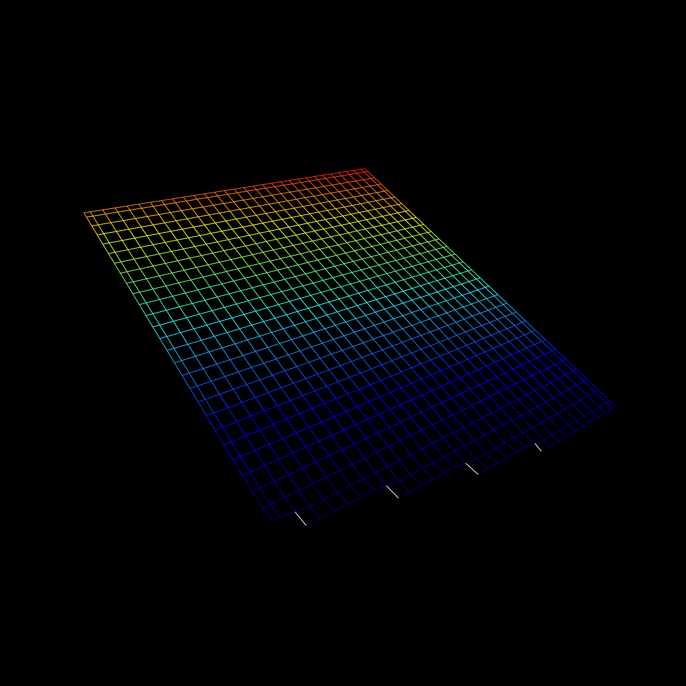
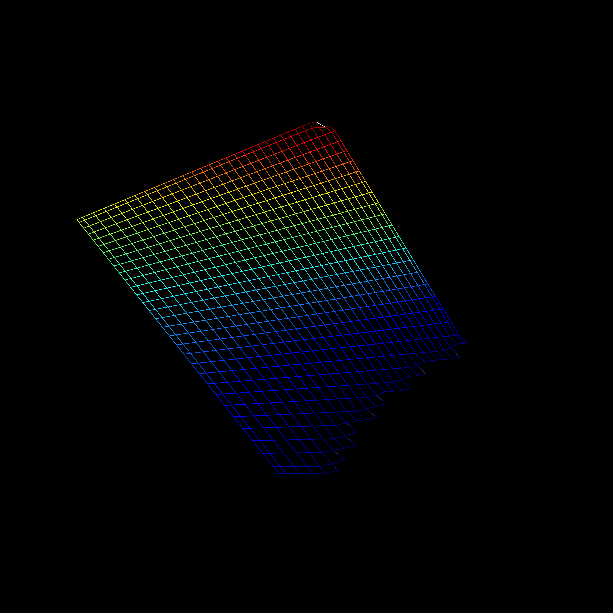
Interactions
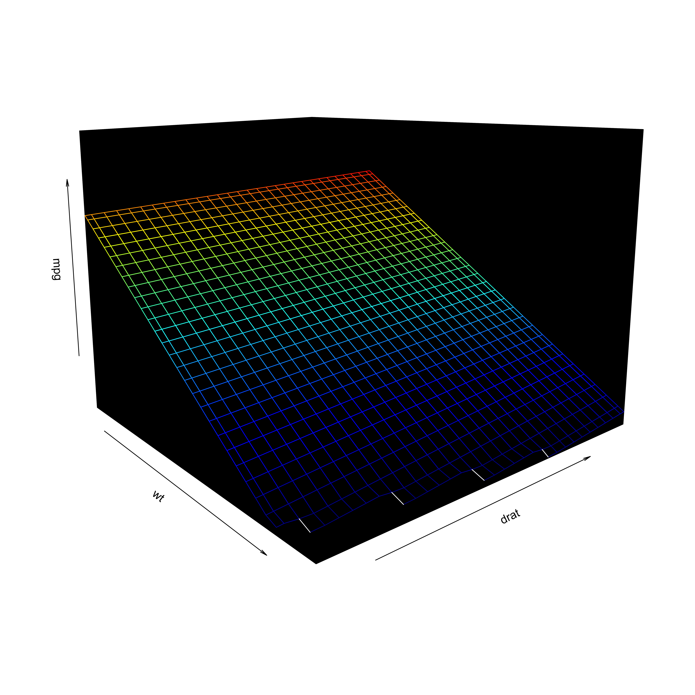
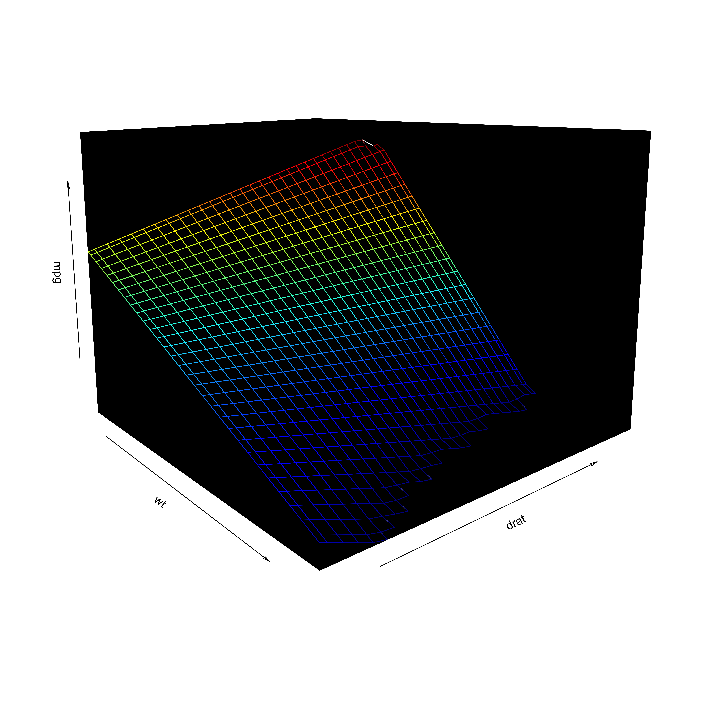
Interactions
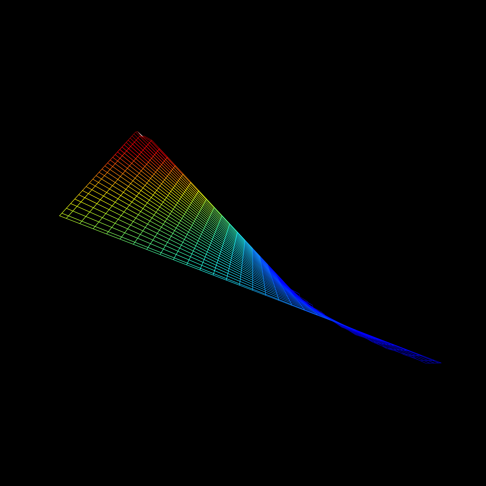
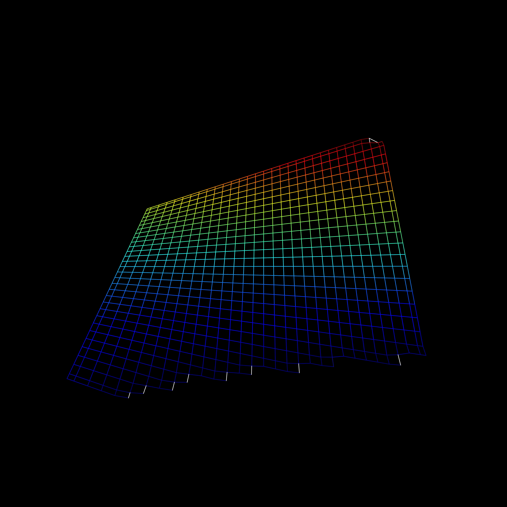
Interactions
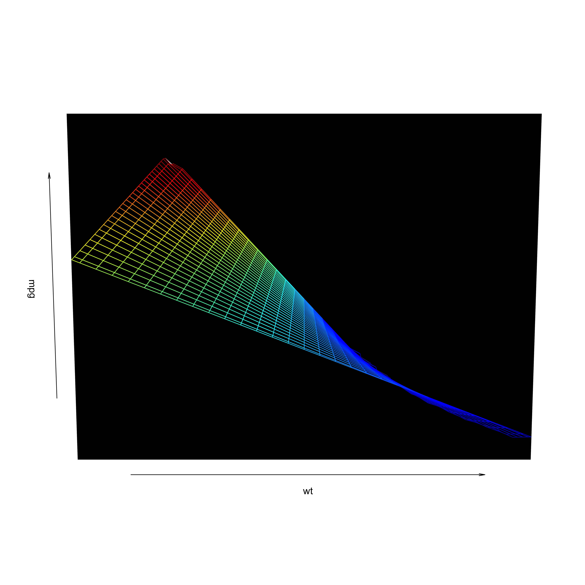
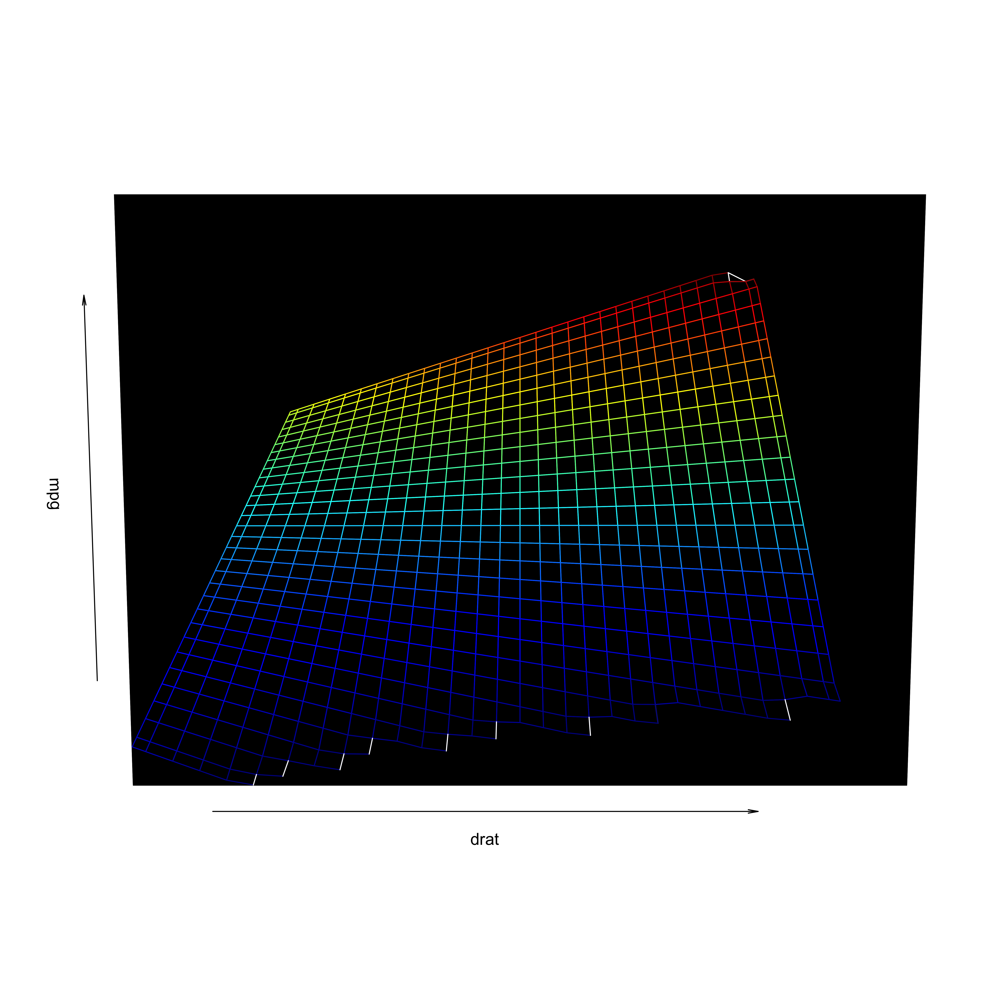
Review
What we’ve seen so far
- Bivariate regression
- MRC
- Additive effects
- Interactions
(multiplicative effects)
What’s left
- Assumptions
- Model specification
- Alpha slippage
- Empirical selection of variables
- Reporting results
Assumptions
(revisited)
A new assumption
Multicollinearity
- Multicollinearity occurs when the predictors are correlated
- height (x1) and weight (x2)
- intelligence (x1) and creativity (x2)
A new assumption
Multicollinearity
- Why is it a problem?
- “Confounds” produce ambiguity of causal inference
- Least Squares Estimation in Linear Model:
- Simultaneous estimation of additive effects of all model predictors
- Does not adequately partition variance among correlated predictors
- Least squares estimation is not adequate for dealing with multicollinearity
- works best when predictors are uncorrelated
Old assumptions revisited
Model specification errors
Avoid excluding relevant variables
- Use Multiple Working Hypotheses
- This is how you safeguard against leaving out a variable that you might need later
- But don’t put in everything but the kitchen sink…you also must avoid including irrelevant variables
- Ideally you want to use plausible rival hypotheses
- You need to have some theory behind your reasoning
- Assuming you have done all of this, we need to figure out which predictors are relevant and which are not relevant
- This is not nearly as a big of a problem as having excluded a relevant variable
How useful is the model output?
Traditional t-test to determine if the b = 0
- Take b-weight, compute standard error
- Use SEb and the b-weight and construct a t-ratio:
\[t_{b} = \frac{b}{SE_{b}}\]
- Theoretically this informs us of whether b = 0 or not
Problem
- The b-weights and the SE of the b-weight are both critically dependent on the model being correctly specified!
- If you made either kind of model specification error, the parameter estimates are invalid
- The b-weights might have changed if you omitted a relevant variable
- The SE of the b-weights will have changed (increased) if you included an irrelevant variable
How useful is the model output?
Your t-tests might not be informative
- If the model is not correctly specified then it is based on incorrect values of either b or SEb or both
- If you knew the model was correctly specified then you would have no need to use the t-tests in the first place
- You only need to use them if you’re unsure whether the model is correctly specified
- So the only conditions in which the tests are useful are the conditions in which they may be invalid!
- But you only test this if you are questioning the specification of the model
How do you deal with this?
Hierarchical partitioning of variance through nested model comparisons
Hierarchical Partitioning of Variance
Hierarchical Partitioning of Variance
Nested model comparisons
- Comparison of “hierarchically nested” multiple regression models
- Requires theoretical specification and causal ordering of predictors
Nested model comparisons
What is a nested model?
A nested model is when one model is nested inside the other such that there is a more inclusive model that contains more parameters and a less inclusive model (restricted model) that contains just a subset of specific variables you would like to test
Nested model comparisons
What is a nested model?
- In nested model comparisons, you are testing whether those parameters not in the restricted model can be eliminated:
- You want to see if those parameters not in the restricted models can be set to 0
- You want to see if these extra parameters are needed or if they can be taken out
How
- Test a more complicated model and then a less complicated one
Nested model comparisons
Comparing nested models
- You often cannot compare two different restricted models directly
- If the models do not overlap they cannot be directly compared
- You must construct an inclusive model such that both restricted models are nested within a common inclusive model
- Then, to do the nested model comparisons you run the alternative restricted models and test each against the same inclusive model
Nested model comparisons
The semipartial R2
- The sr2 doesn’t tell you if the predictor in question is statistically significant, but rather how to estimate the unique contributions of each variable
- We are attempting the elimination of irrelevant variables with this procedure:
- We cannot address omission of a relevant variable this way (or in any other mathematical way because you cannot do math on variables that you didn’t measure in first place 🤦♀️)
- This method corrects Type I Errors only
Nested model comparisons
Inclusive Regression Model (R2I):
\[\hat{y} = a + b_{1}x_{1} + b_{2}x_{2} + b_{3}x_{3} + e\]
Restricted Regression Model (R2R):
\[\hat{y} = a + b_{1}x_{1} + b_{2}x_{2} + e\]
Nested Model Comparison:
\[(R^2_{I} - R^2_{R}) = sr^2(y, x_{3} \times x_{1}, x_{2})\]
Nested model comparisons: (kI - kR) = 1
Restricted Regression Model 1:
\[\hat{y} = a + b_{1}x_{1} + b_{2}x_{2} + e\]
Restricted Regression Model 2:
\[\hat{y} = a + b_{1}x_{1} + b_{3}x_{3} + e\]
Restricted Regression Model 3:
\[\hat{y} = a + b_{2}x_{2} + b_{3}x_{3} + e\]
Nested model comparisons: (kI - kR) = 2
Restricted Regression Model 4:
\[\hat{y} = a + b_{1}x_{1} + e\]
Restricted Regression Model 5:
\[\hat{y} = a + b_{2}x_{2} + e\]
Restricted Regression Model 6:
\[\hat{y} = a + b_{3}x_{3} + e\]
Nested model comparisons
How do we test semipartials?
- We will use a modification of the F-ratio (systematic variance over the error variance)
- F-ratio for sr2 = the F-ratio for the hierarchical partitioning of variance using nested model comparisons
- The sr2 of the variable of interest goes in the numerator
- The residual of the inclusive model goes in the denominator
Nested model comparisons
The semipartial F-Ratio
- This F-ratio is used like a “backward” traditional F-ratio:
- It is a test of what you have eliminated to see if you can safely eliminate it
- You only eliminate variables if doing so does not result in a significant loss of explanatory power
- It is not a test of whether what you have included is relevant:
- It’s not what’s left in the model that is being tested
- It’s what’s not in the restrictive model that is being tested
References
Berry, W. D., & Feldman, S. (1985a). Multicollinearity. In W. D. Berry & S. Feldman (Eds.), Multiple regression in practice (pp. 37–50). Newbury Park, CA: Sage.
Berry, W. D., & Feldman, S. (1985b). Specification error. In W. D. Berry & S. Feldman (Eds.), Multiple regression in practice (pp. 18–25). Newbury Park, CA: Sage.
Cohen, J., & Cohen, P. (1975). Applied multiple regression/correlation analysis for the behavioral sciences. Lawrence Erlbaum.
Figueredo, A. J. (2013a). Empirical selection of variables. Statistical Methods in Psychological Research.
Figueredo, A. J. (2013b). Multiple regression. Statistical Methods in Psychological Research.
Figueredo, A. J. (2013c). Strong inference. Statistical Methods in Psychological Research.
Lewis-Beck, M. (1980). Multiple regression. In M. Lewis-Beck (Ed.), Applied regression: An introduction (pp. 47–74). Newbury Park, CA: Sage.
Schroeder, L. D., Sjoquist, D. L., & Stephan, P. E. (1986a). Multiple linear regression. In L. D. Schroeder, D. L. Sjoquist, & P. E. Stephan (Eds.), Understanding regression analysis: An introductory guide (pp. 29–35). Newbury Park, CA: Sage.
Schroeder, L. D., Sjoquist, D. L., & Stephan, P. E. (1986b). Problems and issues of linear regression. In L. D. Schroeder, D. L. Sjoquist, & P. E. Stephan (Eds.), Understanding regression analysis: An introductory guide (pp. 65–80). Newbury Park, CA: Sage.
Wickham, H., & Grolemund, G. (2016). R for data science: Import, tidy, transform, visualize, and model data. O’Reilly Media.
Bonus - Statistical control in MRC
Some data
'data.frame': 10000 obs. of 5 variables:
$ age : num 5 5 5 5 5 5 5 5 5 5 ...
$ height : num 36.8 40.9 41.9 40.9 40 ...
$ score : num 57.4 55.7 53.9 56.8 53.8 ...
$ age_c : num -6.5 -6.5 -6.5 -6.5 -6.5 -6.5 -6.5 -6.5 -6.5 -6.5 ...
$ height_c: num -12.64 -8.56 -7.51 -8.5 -9.42 ... age height score age_c height_c
1 7.9 40.43 58.87 -3.6 -8.98
2 18.0 56.09 70.63 6.5 6.68
3 5.1 42.76 57.14 -6.4 -6.65
4 17.0 57.87 72.29 5.5 8.45
5 16.8 54.27 68.92 5.3 4.86
6 18.0 54.04 70.00 6.5 4.62
7 11.5 43.96 66.89 0.0 -5.45
8 17.3 58.31 72.03 5.8 8.89
9 16.9 57.62 70.04 5.4 8.21
10 8.8 44.40 60.44 -2.7 -5.01
Call:
lm(formula = height ~ age_c, data = mrc_ex_data)
Residuals:
Min 1Q Median 3Q Max
-11.255 -2.033 0.031 2.013 11.665
Coefficients:
Estimate Std. Error t value Pr(>|t|)
(Intercept) 49.415790 0.029986 1648.0 <2e-16 ***
age_c 1.261273 0.007989 157.9 <2e-16 ***
---
Signif. codes: 0 '***' 0.001 '**' 0.01 '*' 0.05 '.' 0.1 ' ' 1
Residual standard error: 2.999 on 9998 degrees of freedom
Multiple R-squared: 0.7137, Adjusted R-squared: 0.7137
F-statistic: 2.493e+04 on 1 and 9998 DF, p-value: < 2.2e-16
Call:
lm(formula = score ~ age_c, data = mrc_ex_data)
Residuals:
Min 1Q Median 3Q Max
-7.6328 -1.3835 0.0204 1.3758 7.1214
Coefficients:
Estimate Std. Error t value Pr(>|t|)
(Intercept) 64.367451 0.019954 3225.8 <2e-16 ***
age_c 1.240785 0.005316 233.4 <2e-16 ***
---
Signif. codes: 0 '***' 0.001 '**' 0.01 '*' 0.05 '.' 0.1 ' ' 1
Residual standard error: 1.995 on 9998 degrees of freedom
Multiple R-squared: 0.8449, Adjusted R-squared: 0.8449
F-statistic: 5.447e+04 on 1 and 9998 DF, p-value: < 2.2e-16
Call:
lm(formula = score ~ height_c, data = mrc_ex_data)
Residuals:
Min 1Q Median 3Q Max
-11.5541 -2.1973 -0.0409 2.1267 12.3640
Coefficients:
Estimate Std. Error t value Pr(>|t|)
(Intercept) 64.367451 0.031959 2014 <2e-16 ***
height_c 0.701625 0.005703 123 <2e-16 ***
---
Signif. codes: 0 '***' 0.001 '**' 0.01 '*' 0.05 '.' 0.1 ' ' 1
Residual standard error: 3.196 on 9998 degrees of freedom
Multiple R-squared: 0.6022, Adjusted R-squared: 0.6021
F-statistic: 1.513e+04 on 1 and 9998 DF, p-value: < 2.2e-16
What can we do about this?
Call:
lm(formula = score ~ height_c + age_c, data = mrc_ex_data)
Residuals:
Min 1Q Median 3Q Max
-7.6294 -1.3824 0.0191 1.3743 7.1263
Coefficients:
Estimate Std. Error t value Pr(>|t|)
(Intercept) 64.367451 0.019955 3225.66 <2e-16 ***
height_c -0.001730 0.006655 -0.26 0.795
age_c 1.242967 0.009936 125.09 <2e-16 ***
---
Signif. codes: 0 '***' 0.001 '**' 0.01 '*' 0.05 '.' 0.1 ' ' 1
Residual standard error: 1.995 on 9997 degrees of freedom
Multiple R-squared: 0.8449, Adjusted R-squared: 0.8449
F-statistic: 2.723e+04 on 2 and 9997 DF, p-value: < 2.2e-16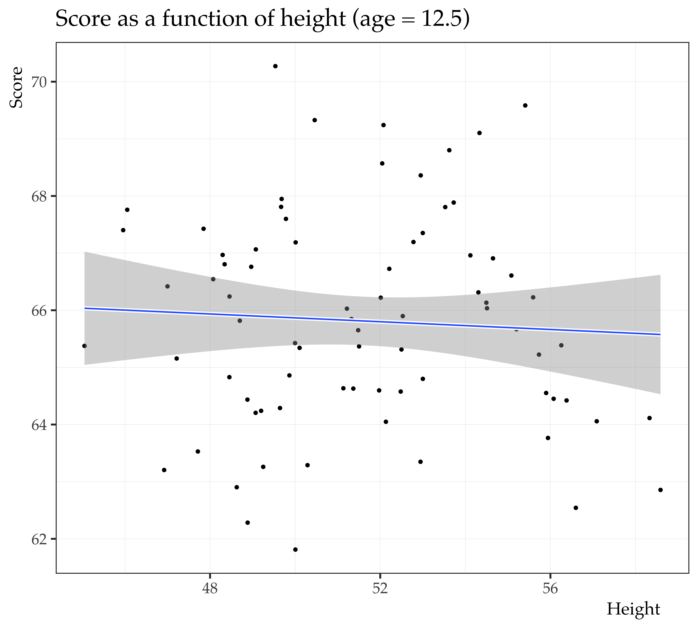
We partial out the spurious relationship between math score
and height by conditioning on age.